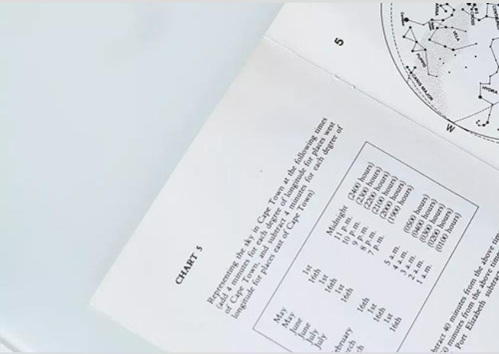
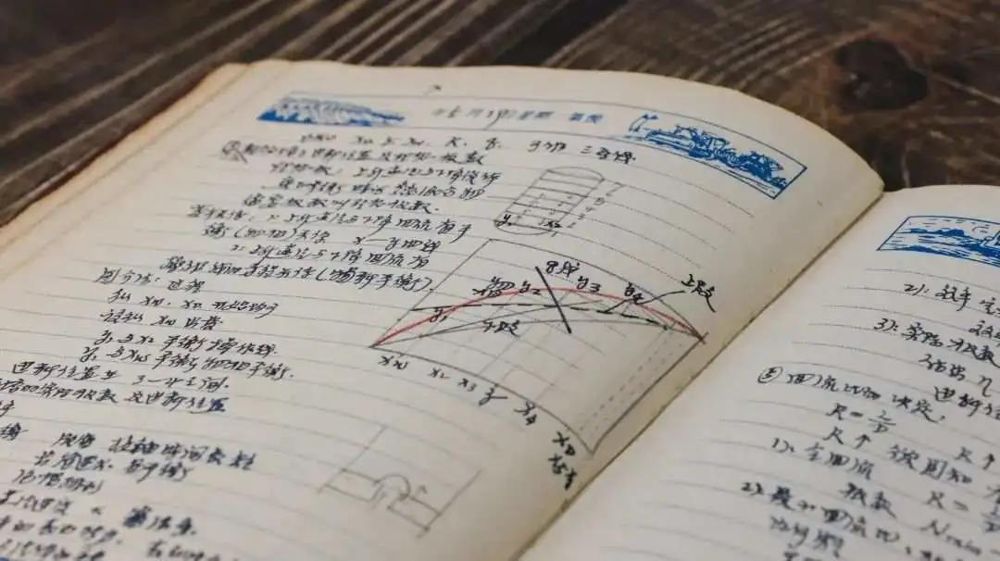
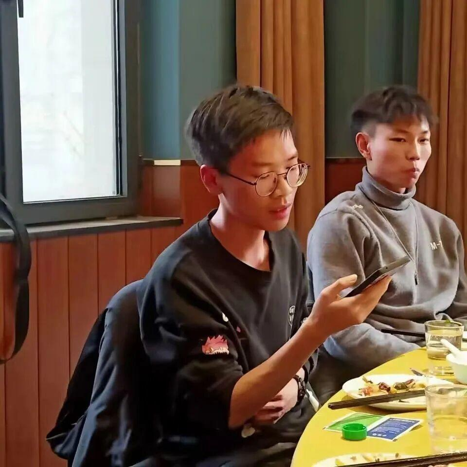
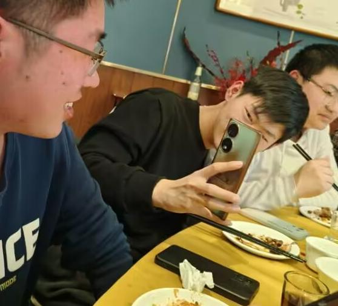
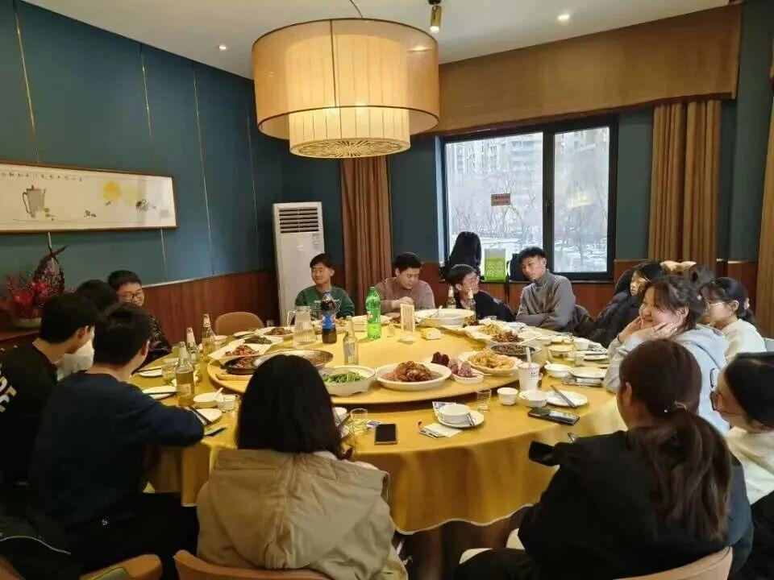
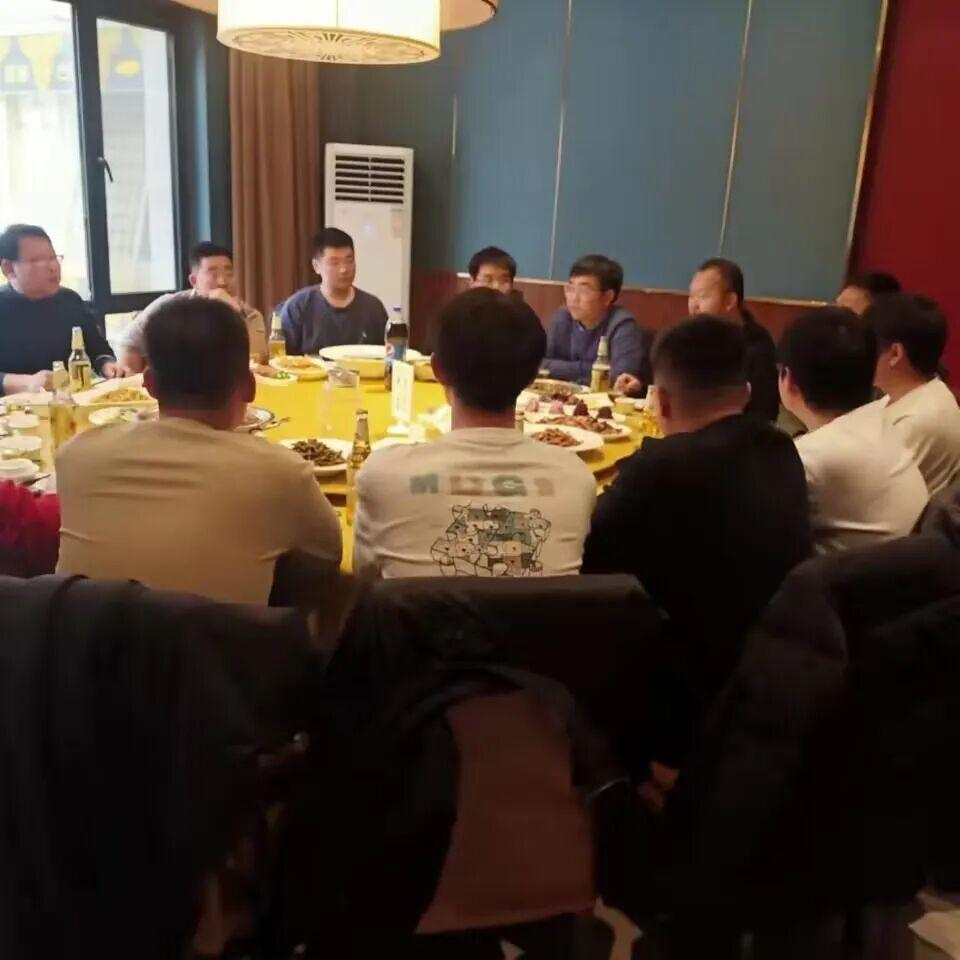
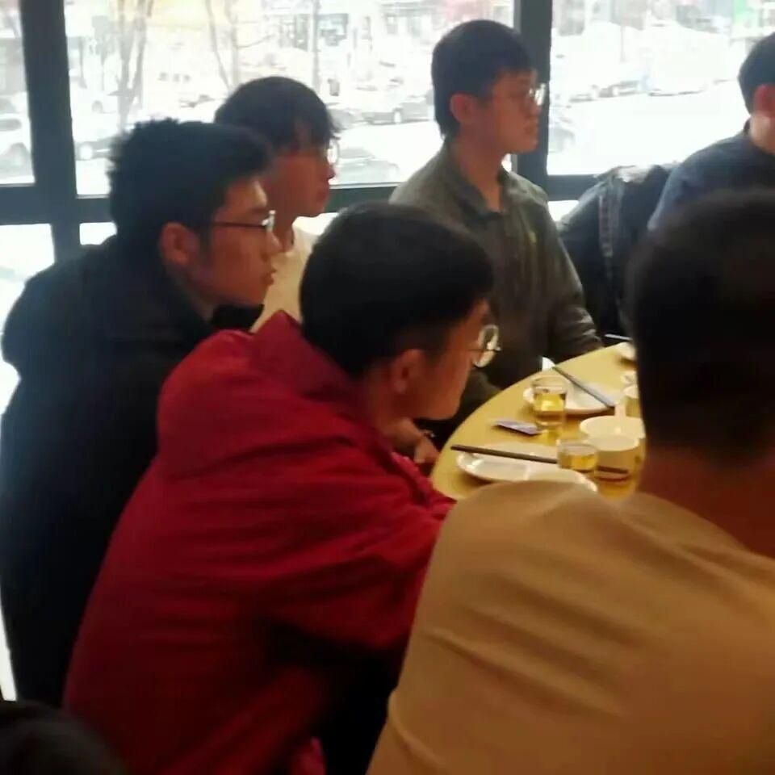

开学季|你好，新学期！
开学后才想起有一个叫上学期期末考试的东西，不知道大家有几门考试?复习的怎么样?准备好迎接考试了吗？（灵魂拷问）
一、新学期指南
调整作息时间
寒假在家，同学们作息颠倒的不在少数，回到学校，熄灯后结束手头工作，上床睡觉，第二天按时起床，保证充足的睡眠，恢复正常的生物钟。
健康饮食
健康的食物包括富含碳水的五谷杂粮，富含蛋白质的鸡蛋、瘦肉等食物，以及水果蔬菜，无论在校内还是校外注意饮食健康，避免暴饮暴食。
适当锻炼身体
适当的运动可以燃烧多余的脂肪，排出有害物质，促进新陈代谢，把假期长的赘肉减一减，塑造好体型。
二、学习规划



上学期期末考试时间已经出炉，同学们在学习本学期课程的同时，抓紧时间复习上学期考试科目，切记切记不要挂科，否则让你玩都玩不好。
三、团建聚餐







排版 | 陈华
文字 | 陈华
审核 | 恩嘉